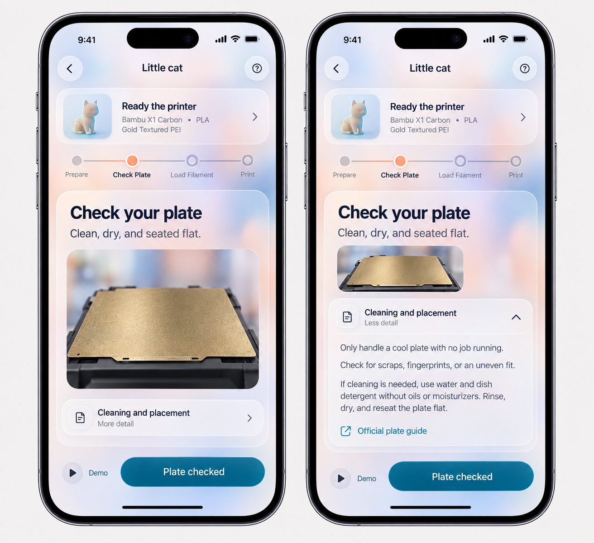
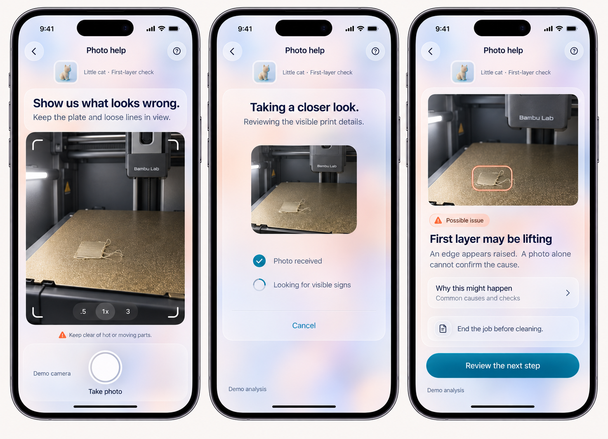

Benchmate / design review / 14 October 2026
A quieter interface, with detail when you need it.
Pocket Quest progression refined with smaller type and the two latest glass UI references. These are generated app concepts; the running prototype has not been changed.
01 / One task, optional depth
A compact project header, a clear task and one main action. The second screen shows the detailed description expanded in context.

02 / Show the problem → review → next step
Take a photo, see what the app is processing, then review a possible finding with an optional explanation. The photo and project context persist through all three screens.

For visual review: smaller typography, matte layered glass, readable ink and a distinct teal action. Optional detail stays out of the main decision path. No live photo analysis is implemented.
Corrections to carry into implementation
- Keep the existing four phases and explicit checkpoints; fix generated labels and remove the unnecessary filament-loading implication.
- Replace the extra Demo play button with a quiet label. Keep one dominant action.
- Rebuild the same original cat in live 3D and verify text contrast and touch targets in actual components.
- Omit camera zoom controls unless supported. Keep findings uncertain and retain the full end-job, cool, clean and reviewed-restart flow.